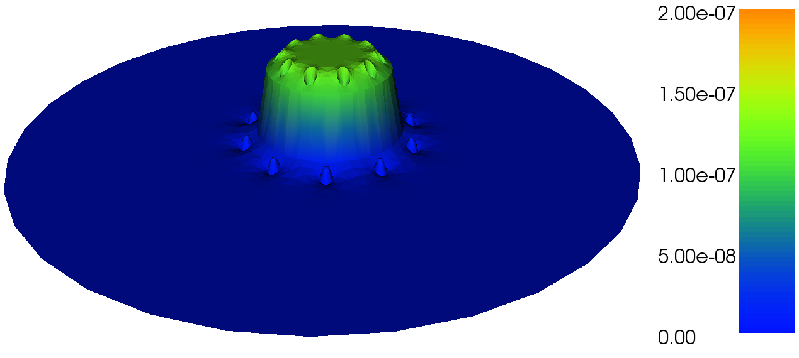

Subdomains and boundary conditions
So far, we have only looked briefly at how to specify boundary conditions. In this chapter, we look more closely at how to specify boundary conditions on specific parts (subdomains) of the boundary and how to combine multiple boundary conditions. We will also look at how to generate meshes with subdomains and how to define coefficients and variational problems that look different in different subdomains.
Combining Dirichlet and Neumann conditions
Let's return to our Poisson solver from the chapter Fundamentals: Solving the Poisson equation and see how to extend the mathematics and the implementation to handle a Dirichlet condition in combination with a Neumann condition. The domain is still the unit square, but now we set the Dirichlet condition \( u=\ub \) at the left and right sides, \( x=0 \) and \( x=1 \), while the Neumann condition $$ \begin{equation*} -{\partial u\over\partial n}=g \end{equation*} $$ is applied to the remaining sides \( y=0 \) and \( y=1 \).
PDE problem
Let \( \GD \) and \( \GN \) denote the parts of the boundary \( \partial\Omega \) where the Dirichlet and Neumann conditions apply, respectively. The complete boundary-value problem can be written as $$ \begin{alignat}{2} - \nabla^2 u &= f \quad&&\mbox{in } \Omega, \\ u &= \ub &&\mbox{on } \GD, \\ - {\partial u\over\partial n} &= g &&\mbox{on } \GN \tp \end{alignat} $$ Again we choose \( u=1+x^2 + 2y^2 \) as the exact solution and adjust \( f \), \( g \), and \( \ub \) accordingly: $$ \begin{align*} f &= -6,\\ g &= \left\lbrace\begin{array}{ll} 0, & y=0\\ 4, & y=1 \end{array}\right.\\ \ub &= 1 + x^2 + 2y^2\tp \end{align*} $$ For ease of programming, we may introduce a \( g \) function defined over the whole of \( \Omega \) such that \( g \) takes on the right values at \( y=0 \) and \( y=1 \). One possible extension is $$ \begin{equation*} g(x,y) = 4y\tp \end{equation*} $$
Variational formulation
The first task is to derive the variational problem. This time we cannot omit the boundary term arising from the integration by parts, because \( v \) is only zero on \( \GD \). We have $$ \begin{equation*} -\int_\Omega (\nabla^2 u)v \dx = \int_\Omega\nabla u\cdot\nabla v \dx - \int_{\partial\Omega}{\partial u\over \partial n}v \ds, \end{equation*} $$ and since \( v=0 \) on \( \GD \), $$ \begin{equation*} - \int_{\partial\Omega}{\partial u\over \partial n}v \ds = - \int_{\GN}{\partial u\over \partial n}v \ds = \int_{\GN}gv \ds, \end{equation*} $$ by applying the boundary condition on \( \GN \). The resulting weak form reads $$ \begin{equation} \int_{\Omega} \nabla u \cdot \nabla v \dx = \int_{\Omega} fv \dx - \int_{\GN} gv \ds\tp \tag{4.1} \end{equation} $$ Expressing this equation in the standard notation \( a(u,v)=L(v) \) is straightforward with $$ \begin{align} a(u, v) &= \int_{\Omega} \nabla u \cdot \nabla v \dx, \tag{4.2}\\ L(v) &= \int_{\Omega} fv \dx - \int_{\GN} gv \ds\tp \tag{4.3} \end{align} $$
FEniCS implementation
How does the Neumann condition impact the implementation? Let us
revisit our previous implementation ft01_poisson.py from
the section FEniCS implementation and examine which changes
we need to make to incorporate the Neumann condition. It turns out that
only two are necessary.
- The function
boundarydefining the Dirichlet boundary must be modified. - The new boundary term must be added to the expression for
L.
tol = 1E-14
def boundary_D(x, on_boundary):
if on_boundary:
if near(x[0], 0, tol) or near(x[0], 1, tol):
return True
else:
return False
else:
return False
A more compact implementation reads
def boundary_D(x, on_boundary):
return on_boundary and (near(x[0], 0, tol) or near(x[0], 1, tol))
The second adjustment of our program concerns the definition of L,
which needs to include the Neumann condition:
g = Expression('4*x[1]')
L = f*v*dx - g*v*ds
The ds variable implies a boundary integral, while dx
implies an integral over the domain \( \Omega \).
No other modifications are necessary.
Note that the integration *ds is carried out over the entire
boundary, including the Dirichlet boundary. However, since the test
function v vanishes on the Dirichlet boundary (as a result
specifying a DirichletBC), the integral will only include the
contribution from the Neumann boundary.
Setting multiple Dirichlet conditions
In the previous section, we used a single function \( \ub(x,y) \) for setting Dirichlet conditions at two parts of the boundary. Often it is more practical to use multiple functions, one for each subdomain of the boundary. Let us return to the case from the section Combining Dirichlet and Neumann conditions and redefine the problem in terms of two Dirichlet conditions: $$ \begin{alignat*}{2} - \nabla^2 u &= f \quad&&\mbox{in } \Omega, \\ u &= u_{_\mathrm{L}} &&\mbox{on } \GD^{^{\mathrm{L}}}, \\ u &= u_{_\mathrm{R}} &&\mbox{on } \GD^{^{\mathrm{R}}}, \\ - {\partial u\over\partial n} &= g &&\mbox{on } \GN \tp \end{alignat*} $$ Here, \( \GD^{^{\mathrm{L}}} \) is the left boundary \( x=0 \), while \( \GD^{^{\mathrm{R}}} \) is the right boundary \( x=1 \). We note that \( u_{_\mathrm{L}} = 1 + 2y^2 \), \( u_{_\mathrm{R}} = 2 + 2y^2 \), and \( g=4y \).
For the boundary condition on \( \GD^{^{\mathrm{L}}} \), we define the
usual triple of an expression for the boundary value, a function
defining the location of the boundary, and a DirichletBC object:
u_L = Expression('1 + 2*x[1]*x[1]')
def boundary_L(x, on_boundary):
tol = 1E-14
return on_boundary and near(x[0], 0, tol)
bc_L = DirichletBC(V, u_L, boundary_L)
For the boundary condition on \( \GD^{^{\mathrm{R}}} \), we write a similar code snippet:
u_R = Expression('2 + 2*x[1]*x[1]')
def boundary_R(x, on_boundary):
tol = 1E-14
return on_boundary and near(x[0], 1, tol)
bc_R = DirichletBC(V, u_R, boundary_R)
We collect the two boundary conditions in a list which
we can pass to the solve function to compute the solution:
bcs = [bc_L, bc_R]
...
solve(a == L, u, bcs)
Note that for boundary values that do not depend on \( x \) or \( y \), we
might replace the Expression objects by Constant objects.
Defining subdomains for different materials
Solving PDEs in domains made up of different materials is a frequently encountered task. In FEniCS, these kinds of problems are handled by defining subdomains inside the domain. A simple example with two materials (subdomains) in 2D will demonstrate the idea.
Figure 14: Medium with discontinuous material properties.

Suppose we want to solve $$ \begin{equation} \tag{4.4} \nabla\cdot \left\lbrack \kappa(x,y)\nabla u(x,y)\right\rbrack = 0, \end{equation} $$ in a domain \( \Omega \) consisting of two subdomains where \( \kappa \) takes on a different value in each subdomain. We take \( \Omega = [0,1]\times [0,1] \) and divide it into two equal subdomains, as depicted in Figure 14, $$ \begin{equation*} \Omega_0 = [0, 1]\times [0,1/2],\quad \Omega_1 = [0, 1]\times (1/2,1]\tp \end{equation*} $$ We define \( \kappa(x,y)=\kappa_0 \) in \( \Omega_0 \) and \( \kappa(x,y)=\kappa_1 \) in \( \Omega_1 \), where \( \kappa_0>0 \) and \( \kappa_1>0 \) are given constants.
Physically, this problem may be viewed as a model of heat conduction, where the heat conduction in \( \Omega_1 \) is more efficient than in \( \Omega_0 \). An alternative interpretation is flow in porous media with two geological layers, where the layers' ability to transport the fluid differ.
Using expressions to define subdomains
The simplest way of implementing a variable coefficient \( \kappa \) is to
define an Expression object where we return the appropriate \( \kappa \)
value depending on the position in space. Since we need some testing
on the coordinates, the most straightforward approach is to define a
subclass of Expression, where we can use a full Python method
instead of just a C++ string formula for specifying a function. The
method that defines the function is called eval:
class K(Expression):
def set_k_values(self, k_0, k_1):
self.k_0, self.k_1 = k_0, k_1
def eval(self, value, x):
"Set value[0] to value at point x"
tol = 1E-14
if x[1] <= 0.5 + tol:
value[0] = self.k_0
else:
value[0] = self.k_1
# Initialize k
k = K()
k.set_k_values(1, 0.01)
The eval method gives great flexibility in defining functions, but a
downside is that FEniCS will call eval in Python for each node x,
which is a slow process.
An alternative method is to use a C++ string expression as we have seen before, which is much more efficient in FEniCS. This can be done using inline if tests in C++:
tol = 1E-14
k_0 = 1.0
k_1 = 0.01
k = Expression('x[1] <= 0.5 + tol ? k_0 : k_1',
tol=tol, k_0=k_0, k_1=k_1)
This method of defining variable coefficients works if the subdomains are simple shapes that can be expressed in terms of geometric inequalities. However, for more complex subdomains, we will need to use a more general technique, as we will see next.
Using mesh functions to define subdomains
We now address how to specify the subdomains \( \Omega_0 \) and \( \Omega_1 \)
using a more general technique. This technique involves the use of two
classes that are essential in FEniCS when working with subdomains:
SubDomain and MeshFunction. Consider the following definition of the
boundary \( x = 0 \):
def boundary(x, on_boundary):
tol = 1E-14
return on_boundary and near(x[0], 0, tol)
This boundary definition is actually a shortcut to the more general
FEniCS concept SubDomain. A SubDomain is a class which defines a
region in space (a subdomain) in terms of a member function inside
which returns True for points that belong to the subdomain and
False for points that don't belong to the subdomain. Here is how to
specify the boundary \( x = 0 \) as a SubDomain:
class Boundary(SubDomain):
def inside(self, x, on_boundary):
tol = 1E-14
return on_boundary and near(x[0], 0, tol)
boundary = Boundary()
bc = DirichletBC(V, Constant(0), boundary)
We notice that the inside function of the class Boundary is
(almost) identical to the previous boundary definition in terms of the
boundary function. Technically, our class Boundary is a
subclass of the FEniCS class SubDomain.
We will use two SubDomain subclasses to define the two subdomains
\( \Omega_0 \) and \( \Omega_1 \):
tol = 1E-14
class Omega_0(SubDomain):
def inside(self, x, on_boundary):
return x[1] <= 0.5 + tol
class Omega_1(SubDomain):
def inside(self, x, on_boundary):
return x[1] >= 0.5 - tol
Notice the use of <= and >= in both tests. FEniCS will call the
inside function for each vertex in a cell to determine whether or
not the cell belongs to a particular subdomain. For this reason, it is
important that the test holds for all vertices in cells aligned with
the boundary. In addition, we use a tolerance to make sure that
vertices on the internal boundary at \( y = 0.5 \) will belong to both
subdomains. This is a little counter-intuitive, but is necessary to
make the cells both above and below the internal boundary belong to
either \( \Omega_0 \) or \( \Omega_1 \).
To define the variable coefficient \( \kappa \), we will use a powerful tool in
FEniCS called a MeshFunction. A MeshFunction is a discrete
function that can be evaluated at a set of so-called mesh
entities. A mesh entity in FEniCS is either a vertex, an edge, a
face, or a cell (triangle or tetrahedron). A MeshFunction over cells
is suitable to represent subdomains (materials), while a
MeshFunction over facets (edges or faces) is used to represent
pieces of external or internal boundaries. A MeshFunction over cells
can also be used to represent boundary markers for mesh refinement. A
FEniCS MeshFunction is parameterized both over its data type (like
integers or booleans) and its dimension (0 = vertex, 1 = edge
etc.). Special subclasses VertexFunction, EdgeFunction etc. are
provided for easy definition of a MeshFunction of a particular
dimension.
Since we need to define subdomains of \( \Omega \) in the present example,
we make use of a CellFunction. The constructor
is fed with two arguments: 1) the type of value: 'int' for integers,
'size_t' for non-negative (unsigned) integers, 'double' for real
numbers, and 'bool' for logical values; 2) a Mesh object.
Alternatively, the constructor can take just a filename and initialize
the CellFunction from data in a file.
We start with creating a CellFunction whose values are non-negative
integers ('size_t') for numbering the subdomains:
materials = CellFunction('size_t', mesh)
Next, we use the two subdomains to mark the cells belonging to each subdomain:
# Mark subdomains with numbers 0 and 1
subdomain0 = Omega_0()
subdomain1 = Omega_1()
subdomain0.mark(materials, 0)
subdomain1.mark(materials, 1)
This will set the values of the mesh function materials to \( 0 \) on
each cell belonging to \( \Omega_0 \) and \( 1 \) on all cells belonging to
\( \Omega_1 \). Alternatively, we can use the following equivalent code to
mark the cells:
materials.set_all(0)
subdomain1.mark(materials, 1)
To examine the values of the mesh function and see that we have indeed defined our subdomains correctly, we can simply plot the mesh function:
plot(materials, interactive=True)
We may also wish to store the values of the mesh function for later use:
File('materials.xml.gz') << materials
which can later be read back from file as follows:
File('materials.xml.gz') >> materials
Now, to use the values of the mesh function materials to define the
variable coefficient \( \kappa \), we create a FEniCS Expression:
class K(Expression):
def __init__(self, materials, k_0, k_1, **kwargs):
self.materials = materials
self.k_0 = k_0
self.k_1 = k_1
def eval_cell(self, values, x, cell):
if self.materials[cell.index] == 0:
values[0] = self.k_0
else:
values[0] = self.k_1
k = K(materials, k_0, k_1, degree=0)
This is similar to the Expression subclass we defined above, but we
make use of the member function eval_cell in place of the regular
eval function. This version of the evaluation function has an
addition cell argument which we can use to check on which cell we are
currently evaluating the function.
Since we make use of geometric tests to define the two SubDomains
for \( \Omega_0 \) and \( \Omega_1 \), the MeshFunction method may seem like
an unnecessary complication of the simple method using an
Expression with an if-test. However, in general the definition of
subdomains may be available as a MeshFunction (from a data file),
perhaps generated as part of the mesh generation process, and not as a
simple geometric test. In such cases the method demonstrated here is
the recommended way to define subdomains.
Vectorized version of subdomain definitions
To speed up this code, we can vectorize the expressions:
materials = CellFunction('size_t', mesh)
materials.set_all(0) # "the rest"
for m, subdomain in enumerate(subdomains[1:], 1):
subdomain.mark(materials, m)
kappa_values = kappa
V0 = FunctionSpace(mesh, 'DG', 0)
kappa = Function(V0)
help = np.asarray(materials.array(), dtype=np.int32)
kappa.vector()[:] = np.choose(help, kappa_values)
The help array is required since choose cannot work with
materials.array() because this array has elements of
type uint32. We must therefore transform this array to an array
help with standard int32 integers.
Using C++ code snippets to define subdomains
The SubDomain and Expression Python classes are very convenient,
but their use leads to function calls from C++ to Python for each node
in the mesh. Since this involves a significant cost, we need to make
use of C++ code for large-scale computational problems.
Instead of writing the SubDomain subclass in Python, we may instead use
the CompiledSubDomain tool in FEniCS to specify the subdomain in C++
code and thereby speed up our code. Consider
the definition of the classes Omega_0 and Omega_1 above in Python. The
key strings that define these subdomains can be expressed in C++ syntax
and fed to CompiledSubDomain as follows:
tol = 1E-14
subdomain0 = CompiledSubDomain('x[1] <= 0.5 + tol', tol=tol)
subdomain1 = CompiledSubDomain('x[1] >= 0.5 - tol', tol=tol)
As seen, one can have parameters in the strings and specify their
values by keyword arguments.
The resulting objects, subdomain0 and subdomain1, can be used
as ordinary SubDomain objects.
Compiled subdomain strings can be applied for specifying boundaries as well:
boundary_R = CompiledSubDomain('on_boundary && near(x[0], 1, tol)',
tol=1E-14)
It is also possible to feed the C++ string (without parameters)
directly as the third argument to DirichletBC without explicitly
constructing a CompiledSubDomain object:
bc1 = DirichletBC(V, value, 'on_boundary && near(x[0], 1, tol)')
Python Expression classes may also be redefined using C++ for more
efficient code. Consider again the definition of the class K above
for the variable coefficient \( \kappa = \kappa(x) \). This may be redefined using a
C++ code snippet and the keyword cppcode to the regular FEniCS
Expression class:
cppcode = """
class K : public Expression
{
public:
void eval(Array<double>& values,
const Array<double>& x,
const ufc::cell& cell) const
{
if ((*materials)[cell.index] == 0)
values[0] = k_0;
else
values[0] = k_1;
}
std::shared_ptr<MeshFunction<std::size_t>> materials;
double k_0;
double k_1;
};
"""
k = Expression(cppcode=cppcode, degree=0)
k.materials = materials
k.k_0 = k_0
k.k_1 = k_1
Exercise 3: Efficiency of Python vs C++ expressions
Consider a cube mesh with \( N \) cells in each spatial direction.
We want to define a Function on this mesh where the
values are given by the mathematical function \( f(x,y,z)=a\sin(bxyz) \),
where \( a \) and \( b \) are two parameters. Write a class SineXYZ:
class SineXYZ(Expression):
def __init__(self, a, b):
self.a, self.b = a, b
def eval(self, value, x):
value[0] = self.a*sin(self.b*x[0]*x[1]*x[2])
Create an alternative Expression based on giving the formula for \( f(x,y,z) \)
as a C++ code string. Compare the computational efficiency of the
two implementations (e.g., using time.clock() to measure the CPU time).
The sin function used in class SineXYZ.eval can mean many things.
This is an advanced FEniCS function if imported from fenics.
Much more efficient versions for sin of numbers are found in math.sin
and numpy.sin. Compare the use sin from fenics, math, numpy, and
sympy (note that sin from sympy is very slow).
Here is an appropriate program:
from __future__ import print_function
from fenics import *
import time
def make_sine_Function(N, method):
"""Fill a Function with sin(x*y*z) values."""
mesh = UnitCubeMesh(N, N, N)
V = FunctionSpace(mesh, 'Lagrange', 2)
if method.startswith('Python'):
if method.endswith('fenics.sin'):
# Need sin as local variable in this function
from fenics import sin
elif method.endswith('math.sin'):
from math import sin
elif method.endswith('numpy.sin'):
from numpy import sin
elif method.endswith('sympy.sin'):
from sympy import sin
else:
raise NotImplementedError('method=%s' % method)
print('sin:', sin, type(sin))
class SineXYZ(Expression):
def __init__(self, a, b):
self.a, self.b = a, b
def eval(self, value, x):
value[0] = self.a*sin(self.b*x[0]*x[1]*x[2])
expr = SineXYZ(a=1, b=2)
elif method == 'C++':
expr = Expression('a*sin(b*x[0]*x[1]*x[2])', a=1, b=2)
t0 = time.clock()
u = interpolate(expr, V)
t1 = time.clock()
return u, t1-t0
def main(N):
u, cpu_py_fenics = make_sine_Function(N, 'Python-fenics.sin')
u, cpu_py_math = make_sine_Function(N, 'Python-math.sin')
u, cpu_py_numpy = make_sine_Function(N, 'Python-numpy.sin')
u, cpu_py_sympy = make_sine_Function(N, 'Python-sympy.sin')
u, cpu_cpp = make_sine_Function(N, 'C++')
print("""DOFs: %d
Python:
fenics.sin: %.2f
math.sin: %.2f
numpy.sin: %.2f
sympy.sin: %.2f
C++: %.2f
Speed-up: math: %.2f sympy: %.2f""" %
(u.function_space().dim(),
cpu_py_fenics, cpu_py_math,
cpu_py_numpy, cpu_py_sympy,
cpu_cpp,
cpu_py_math/float(cpu_cpp),
cpu_py_sympy/float(cpu_cpp)))
def profile():
import cProfile
prof = cProfile.Profile()
prof.runcall(main)
prof.dump_stats("tmp.profile")
# http://docs.python.org/2/library/profile.html
main(20)
#profile()
Running the program shows that sin from math is the most efficient choice,
but a string C++ runs 40 times faster. Note that fenics.sin, which is a
sine function in the UFL language that can work with symbolic expressions
in finite element forms, is (naturally) less efficient than the sin
functions for numbers in math and numpy.
Filename: Expression_efficiency.
Setting multiple Dirichlet, Neumann, and Robin conditions
Consider again the model problem from the section Setting multiple Dirichlet conditions where we had both Dirichlet and
Neumann conditions. The term g*v*ds in the expression for L
implies a boundary integral over the complete boundary, or in FEniCS
terms, an integral over all exterior facets. This means that the
boundary integral extends also over the part of the boundary \( \GD \)
where we have Dirichlet conditions. However, only the integral over
\( \GN \) will contribute since \( v = 0 \) on \( \GD \) (which happens when we
apply the Dirichlet boundary condition).
From an efficiency point of view, we would ideally like to compute the
integral g*v*ds only over the part of the boundary where we actually
have Neumann conditions. More importantly, in other problems one may
have different Neumann conditions or other conditions like the Robin
type condition. This can be handled in FEniCS by defining a
MeshFunction that marks different portions of the boundary. The same
technique can also be used to treat multiple Dirichlet conditions.
Three types of boundary conditions
We extend our repertoire of boundary conditions to three types: Dirichlet, Neumann, and Robin. Dirichlet conditions apply to some parts \( \GD^0 \), \( \GD^1 \), \( ... \), of the boundary: $$ \ub^0\hbox{ on }\GD^0,\quad \ub^1\hbox{ on }\GD^1, \quad \ldots$$ where \( \ub^i \) are prescribed functions, \( i=0,1,\ldots \) On other parts, \( \GN^0 \), \( \GN^1 \), and so on, we have Neumann conditions: $$ -\kappa{\partial u\over\partial n} = g_{0}\hbox{ on }\GN^0,\quad -\kappa{\partial u\over\partial n} = g_{1}\hbox{ on }\GN^1,\quad \ldots $$ Finally, we have Robin conditions: $$ \begin{equation*} -\kappa{\partial u\over\partial n} = r(u-s), \tag{4.5} \end{equation*} $$ where \( r \) and \( s \) are specified functions. The Robin condition is most often used to model heat transfer to the surroundings and arise naturally from Newton's cooling law. In that case, \( r \) is a heat transfer coefficient, and \( s \) is the temperature of the surroundings. Both can be space and time-dependent. The Robin conditions apply at some parts \( \GR^0 \), \( \GR^1 \), and so forth: $$ -\kappa{\partial u\over\partial n} = r_0(u-s_0)\hbox{ on }\GR^0,\quad -\kappa{\partial u\over\partial n} = r_1(u-s_1)\hbox{ on }\GR^1,\quad \ldots $$
PDE problem
With the notation above, the model problem to be solved with multiple Dirichlet, Neumann, and Robin conditions can be formulated as follows: $$ \begin{align} -\nabla\cdot(\kappa\nabla u) &= -f, \mbox{ in } \Omega, \tag{4.6}\\ u &= \ub^i \mbox{ on } \GD^i,\quad i=0,1,\ldots \tag{4.7}\\ -\kappa{\partial u\over\partial n} &= g_i \mbox{ on } \GN^i,\quad i=0,1,\ldots \tag{4.8}\\ -\kappa{\partial u\over\partial n} &= r_i(u-s_i) \mbox{ on } \GR^i,\quad i=0,1,\ldots \tag{4.9} \end{align} $$
Variational formulation
As usual, we multiply by a test function \( v \) and integrate by parts: $$ \begin{equation*} -\int_\Omega \nabla\cdot(\kappa\nabla u) v \dx = \int_\Omega \kappa\nabla u\cdot \nabla v \dx - \int_{\partial\Omega}\kappa\frac{\partial u}{\partial n}v \ds\tp \end{equation*} $$ On the Dirichlet part of the boundary (\( \GD^i \)), the boundary integral vanishes since \( v = 0 \). On the remaining part of the boundary, we split the boundary integral into contributions from the Neumann part (\( \GN^i \)) and Robin part (\( \GR^i \)). Inserting the boundary conditions, we obtain $$ \begin{align*} -\int_{\partial\Omega} \kappa\frac{\partial u}{\partial n}v \ds &= -\sum_i\int_{\GN^i} \kappa\frac{\partial u}{\partial n} \ds -\sum_i\int_{\GR^i} \kappa\frac{\partial u}{\partial n} \ds\\ &= \sum_i\int_{\GN^i}g_i \ds + \sum_i\int_{\GR^i}r_i(u-s_i) \ds\tp \end{align*} $$ We thus obtain the following variational problem: $$ \begin{equation} F = \int_{\Omega} \kappa\nabla u\cdot \nabla v \dx + \sum_i\int_{\GN^i} g_iv \ds + \sum_i\int_{\GR^i}r_i(u-s_i)v \ds - \int_{\Omega} fv \dx =0\tp \tag{4.10} \end{equation} $$
We have been used to writing this variational formulation in the
standard notation \( a(u,v)=L(v) \), which requires that we identify all
integrals with both \( u \) and \( v \), and collect these in \( a(u,v) \),
while the remaining integrals with \( v \) and not \( u \) go into \( L(v) \). The
integrals from the Robin condition must for this reason be split in
two parts:
$$
\begin{equation*}
\int_{\GR^i}r_i(u-s_i)v \ds
= \int_{\GR^i} r_iuv \ds - \int_{\GR^i}r_is_iv \ds\tp
\end{equation*}
$$
We then have
$$
\begin{align}
a(u, v) &= \int_{\Omega} \kappa\nabla u\cdot \nabla v \dx
+ \sum_i\int_{\GR^i}r_iuv \ds,
\tag{4.11}\\
L(v) &= \int_{\Omega} fv \dx -
\sum_i\int_{\GN^i} g_i v \ds + \sum_i\int_{\GR^i}r_is_iv \ds\tp
\tag{4.12}
\end{align}
$$
Alternatively, we may keep the formulation
(4.10) and either solve the variational
problem as a nonlinear problem (F == 0) in FEniCS or use the FEniCS
functions lhs and rhs to extract the bilinear and linear parts of
F:
a = lhs(F)
L = rhs(F)
Note that if we choose the solve this linear problem as a nonlinear problem, the Newton iteration will converge in a single iteration.
FEniCS implementation
Let us examine how to extend our Poisson solver to handle general combinations of Dirichlet, Neumann, and Robin boundary conditions. Compared to our previous code, we must consider the following extensions:
- Defining markers for the different parts of the boundary.
- Splitting the boundary integral into parts using the markers.
MeshFunction, but contrary to the section Defining subdomains for different materials, this is not a function over cells, but
a function over the facets of the mesh. We use a FacetFunction for
this purpose:
boundary_markers = FacetFunction('size_t', mesh)
As in the section Defining subdomains for different materials we use a subclass of
SubDomain to identify the various parts of the mesh
function. Problems with domains of more complicated geometries may set
the mesh function for marking boundaries as part of the mesh
generation. In our case, the \( x=0 \) boundary can be marked by
class BoundaryX0(SubDomain):
tol = 1E-14
def inside(self, x, on_boundary):
return on_boundary and near(x[0], 0, tol)
bx0 = BoundaryX0()
bx0.mark(boundary_markers, 0)
Similarly, we make the classes BoundaryX1 for the \( x=1 \) boundary,
BoundaryY0 for the \( y=0 \) boundary, and BoundaryY1 for the \( y=1 \)
boundary, and mark these as subdomains 1, 2, and 3, respectively.
For generality of the implementation, we let the user specify what kind of boundary condition that applies to each of the four boundaries. We set up a Python dictionary for this purpose, with the key as subdomain number and the value as a dictionary specifying the kind of condition as key and a function as its value. For example,
boundary_conditions = {0: {'Dirichlet': u_D},
1: {'Robin': (r, s)},
2: {'Neumann': g},
3: {'Neumann', 0}}
specifies
- a Dirichlet condition \( u = \ub \) for \( x = 0 \);
- a Robin condition \( -\kappa\partial_n u = r(u-s) \) for \( x = 1 \);
- a Neumann condition \( -\kappa\partial_n u = g \) for \( y = 0 \);
- a Neumann condition \( -\kappa\partial_n u = 0 \) for \( y = 1 \).
DirichletBC
objects. Based on the boundary_conditions data structure above, we
can construct this list by the following code snippet:
bcs = []
for i in boundary_conditions:
if 'Dirichlet' in boundary_conditions[i]:
bc = DirichletBC(V, boundary_conditions[i]['Dirichlet'],
boundary_markers, i))
bcs.append(bc)
A new aspect of the variational problem is the two distinct
boundary integrals over \( \GN^i \) and \( \GR^i \).
Having a mesh function over exterior cell facets (our
boundary_markers object), where subdomains (boundary parts) are
numbered as \( 0,1,2,\ldots \), the special symbol ds(0)
implies integration over subdomain (part) 0, ds(1) denotes
integration over subdomain (part) 1, and so on.
The idea of multiple ds-type objects generalizes to volume
integrals too: dx(0), dx(1), etc., are used to
integrate over subdomain 0, 1, etc., inside \( \Omega \).
To express integrals over the boundary parts using ds(i), we must
first redefine the measure ds in terms of our boundary markers:
ds = Measure('ds', domain=mesh, subdomain_data=boundary_markers)
Similarly, if we want integration over different parts of the domain,
we redefine dx as
dx = Measure('dx', domain=mesh, subdomain_data=domain_markers)
where domain_markers is a CellFunction defining subdomains in \( \Omega \).
Suppose we have a Robin condition with values r and s on subdomain
R, a Neumann condition with value g on subdomain N. The
variational form can then be written
a = kappa*dot(grad(u), grad(v))*dx + r*u*v*ds(R)
L = f*v*dx - g*v*ds(N) + r*s*v*ds(R)
In our case, things get a bit more complicated since the
information about integrals in Neumann and Robin conditions
are in the boundary_conditions data structure. We can collect
all Neumann conditions by the following code snippet:
integrals_N = []
for i in boundary_conditions:
if 'Neumann' in boundary_conditions[i]:
if boundary_conditions[i]['Neumann'] != 0:
g = boundary_conditions[i]['Neumann']
integrals_N.append(g*v*ds(i))
Applying sum(integrals_N) will apply the + operator to
the variational forms in the integrals_N list and result
in the integrals we need for the right-hand side L of the
variational form.
The integrals in the Robin condition can similarly be collected in lists:
integrals_R_a = []
integrals_R_L = []
for i in boundary_conditions:
if 'Robin' in boundary_conditions[i]:
r, s = boundary_conditions[i]['Robin']
integrals_R_a.append(r*u*v*ds(i))
integrals_R_L.append(r*s*v*ds(i))
We are now in a position to define the a and L expressions
in the variational formulation:
a = kappa*dot(grad(u), grad(v))*dx + sum(integrals_R_a)
L = f*v*dx - sum(integrals_N) + sum(integrals_R_L)
Alternatively, we may use the FEniCS functions lhs and rhs as
mentioned above to simplify the extraction of terms for the Robin
integrals:
integrals_R = []
for i in boundary_conditions:
if 'Robin' in boundary_conditions[i]:
r, s = boundary_conditions[i]['Robin']
integrals_R.append(r*(u - s)*v*ds(i))
F = kappa*dot(grad(u), grad(v))*dx + \
sum(integrals_R) - f*v*dx + sum(integrals_N)
a, L = lhs(F), rhs(F)
This time we can more naturally define the integrals from the
Robin condition as r*(u - s)*v*ds(i):
The complete code for this example can be found in the function
solver_bc in the program ft11_poisson_bcs.py.
Test problem
We will use the same exact solution \( \uex=1+x^2+2y^2 \) as in the chapter Fundamentals: Solving the Poisson equation, and thus take \( \kappa=1 \) and \( f=-6 \). Our domain is the unit square, and we assign Dirichlet conditions at \( x=0 \) and \( x=1 \), a Neumann condition at \( y=1 \), and a Robin condition at \( y=0 \). With the given \( \uex \), we realize that the Neumann condition is \( -\partial u / \partial n = - \partial u / \partial y = 4y = 4 \), while the Robin condition can be selected in many ways. Since \( \partial u/\partial n=-\partial u/\partial y=0 \) at \( y=0 \), we can select \( s=u \) and specify \( r \neq 0 \) arbitrarily in the Robin condition. We will set \( r = 1000 \) and \( s = u \).
The boundary parts are thus \( \GD^0 \): \( x=0 \), \( \GD^1 \): \( x=1 \), \( \GR^0 \): \( y=0 \), and \( \GN^0 \): \( y=1 \).
When implementing this test problem, and especially other test
problems with more complicated expressions, it is advantageous to use
symbolic computing. Below we define the exact solution as a sympy
expression and derive other functions from their mathematical
definitions. Then we turn these expressions into C/C++ code, which
can be fed into Expression objects.
# Define manufactured solution in sympy and derive f, g, etc.
import sympy as sym
x, y = sym.symbols('x[0] x[1]') # needed by UFL
u = 1 + x**2 + 2*y**2 # exact solution
u_e = u # exact solution
u_00 = u.subs(x, 0) # restrict to x = 0
u_01 = u.subs(x, 1) # restrict to x = 1
f = -sym.diff(u, x, 2) - sym.diff(u, y, 2) # -Laplace(u)
f = sym.simplify(f) # simplify f
g = -sym.diff(u, y).subs(y, 1) # compute g = -du/dn
r = 1000 # Robin data, arbitrary
s = u # Robin data, u = s
# Collect variables
variables = [u_e, u_00, u_01, f, g, r, s]
# Turn into C/C++ code strings
variables = [sym.printing.ccode(var) for var in variables]
# Turn into FEniCS Expression
variables = [Expression(var, degree=2) for var in variables]
# Extract variables
u_e, u_00, u_01, f, g, r, s = variables
# Define boundary conditions
boundary_conditions = {0: {'Dirichlet': u_00}, # x=0
1: {'Dirichlet': u_01}, # x=1
2: {'Robin': (r, s)}, # y=0
3: {'Neumann': g}} # y=1
This simple test problem is turned into a real unit test for different
function spaces in the function test_solver_bc.
Debugging boundary conditions
It is easy to make mistakes when implementing a problem with many
different types of boundary conditions, as in the present case. Some
helpful debugging output is to run through all vertex coordinates and
check if the SubDomain.inside method marks the vertex as on the
boundary. Another useful printout is to list which degrees of freedom
that are subject to Dirichlet conditions, and for first-order Lagrange
(\( \mathsf{P}_1 \)) elements, add the corresponding vertex coordinate to the
output.
if debug:
# Print all vertices that belong to the boundary parts
for x in mesh.coordinates():
if bx0.inside(x, True): print('%s is on x = 0' % x)
if bx1.inside(x, True): print('%s is on x = 1' % x)
if by0.inside(x, True): print('%s is on y = 0' % x)
if by1.inside(x, True): print('%s is on y = 1' % x)
# Print the Dirichlet conditions
print('Number of Dirichlet conditions:', len(bcs))
if V.ufl_element().degree() == 1: # P1 elements
d2v = dof_to_vertex_map(V)
coor = mesh.coordinates()
for i, bc in enumerate(bcs):
print('Dirichlet condition %d' % i)
boundary_values = bc.get_boundary_values()
for dof in boundary_values:
print(' dof %2d: u=%g' % (dof, boundary_values[dof]))
if V.ufl_element().degree() == 1:
print(' at point %s' %
(str(tuple(coor[d2v[dof]].tolist()))))
Generating meshes with subdomains
So far, we have worked mostly with simple meshes (the unit square) and
defined boundaries and subdomains in terms of simple geometric tests
like \( x = 0 \) or \( y \leq 0.5 \). For more complex geometries, it is not
realistic to specify boundaries and subdomains in this way. Instead,
the boundaries and subdomains must be defined as part of the mesh
generation process. We will now look at how to use the FEniCS mesh
generation tool mshr to generate meshes and define subdomains.
PDE problem
We will again solve the Poisson equation, but this time for a different application. Consider an iron cylinder with copper wires wound around the cylinder as in Figure 15. Through the copper wires a static current \( J = 1\,\mathrm{A} \) is flowing and we want to compute the magnetic field \( B \) in the iron cylinder, the copper wires, and the surrounding vacuum.
Figure 15: Cross-section of an iron cylinder with copper wires wound around the cylinder, here with \( n = 8 \) windings. The inner circles are cross-sections of the copper wire coming up ("north") and the outer circles are cross-sections of the copper wire going down into the plane ("south").

First, we simplify the problem to a 2D problem. We can do this by assuming that the cylinder extends far along the \( z \)-axis and as a consequence the field is virtually independent of the \( z \)-coordinate. Next, we consider Maxwell's equation to derive a Poisson equation for the magnetic field (or rather its potential): $$ \begin{align} \nabla\cdot D &= \varrho, \tag{4.13}\\ \nabla\cdot B &= 0, \tag{4.14}\\ \nabla\times E &= -\frac{\partial B}{\partial t}, \tag{4.15}\\ \nabla\times H &= \frac{\partial D}{\partial t} + J. \tag{4.16} \end{align} $$ Here, \( D \) is the displacement field, \( B \) is the magnetic field, \( E \) is the electric field, and \( H \) is the magnetizing field. In addition to Maxwell's equations, we also need a constitutive relation between \( B \) and \( H \), $$ \begin{equation} B = \mu H, \tag{4.17} \end{equation} $$ which holds for an isotropic linear magnetic medium. Here, \( \mu \) is the magnetic permeability of the material. Now, since \( B \) is solenoidal (divergence free) according to Maxwell's equations, we know that \( B \) must be the curl of some vector field \( A \). This field is called the magnetic vector potential. Since \( \partial D/\partial t = 0 \), it follows that $$ \begin{equation} J = \nabla \times H = \nabla \times (\mu^{-1} B) = \nabla \times (\mu^{-1} \nabla \times A) = -\nabla \cdot (\mu^{-1} \nabla A). \tag{4.18} \end{equation} $$ In the last step, we have expanded the second derivatives and used the gauge freedom of \( A \) to simplify the equations to a simple vector-valued Poisson problem for the magnetic vector potential; if \( B = \nabla \times A \), then \( B = \nabla \times (A + \nabla \psi) \) for any scalar field \( \psi \) (the gauge function). For the current problem, we thus need to solve the following 2D Poisson problem for the \( z \)-component \( A_z \) of the magnetic vector potential: $$ \begin{align} - \nabla \cdot (\mu^{-1} \nabla A_z) &= J_z \quad \text{in } \Real^2, \tag{4.19}\\ \lim_{|(x, y)| \rightarrow \infty} A_z &= 0. \tag{4.20} \end{align} $$ Since we cannot solve this problem on an infinite domain, we will truncate the domain using a large disk and set \( A_z = 0 \) on the boundary. The current \( J_z \) is set to \( +1\,\mathrm{A} \) in the interior set of circles (copper wire cross-sections) and to \( -1\,\mathrm{A} \) in the exterior set of circles in Figure 15.
Once the magnetic vector potential has been computed, we can compute the magnetic field \( B = B(x, y) \) by $$ \begin{align} B(x, y) = \left(\frac{\partial A_z}{\partial y}, -\frac{\partial A_z}{\partial x}\right). \tag{4.21} \end{align} $$
Variational formulation
The variational problem is derived as before by multiplying the PDE with a test function \( v \) and integrating by parts. Since the boundary integral vanishes due to the Dirichlet condition, we obtain $$ \begin{equation} \int_{\Omega} \mu^{-1} \nabla A_z \cdot \nabla v \dx = \int_{\Omega} J_z v \dx, \tag{4.22} \end{equation} $$ or, in other words, \( a(A_z, v) = L(v) \) with $$ \begin{align} a(A_z, v) &= \int_{\Omega} \mu^{-1} \nabla A_z \cdot \nabla v \dx, \tag{4.23}\\ L(v) &= \int_{\Omega} J_z v \dx. \tag{4.24} \end{align} $$
FEniCS implementation
The first step is to generate a mesh for the geometry described in
Figure 15. We let \( a \) and \( b \) be the
inner and outer radii of the iron cylinder and let \( c_1 \) and \( c_2 \)
be the radii of the two concentric distributions of copper wire
cross-sections. Furthermore, we let \( r \) be the radius of a copper
wire, \( R \) be the radius of our domain, and \( n \) be the number of
windings (giving a total of \( 2n \) copper-wire cross-sections). This
geometry can be described easily using mshr and a little bit of
Python programming:
# Define geometry for background
domain = Circle(Point(0, 0), R)
# Define geometry for iron cylinder
cylinder = Circle(Point(0, 0), b) - Circle(Point(0, 0), a)
# Define geometry for wires (N = North (up), S = South (down))
angles_N = [i*2*pi/n for i in range(n)]
angles_S = [(i + 0.5)*2*pi/n for i in range(n)]
wires_N = [Circle(Point(c_1*cos(v), c_1*sin(v)), r) for v in angles_N]
wires_S = [Circle(Point(c_2*cos(v), c_2*sin(v)), r) for v in angles_S]
The mesh that we generate will be a mesh of the entire disk with
radius \( R \) but we need the mesh generation to respect the internal
boundaries defined by the iron cylinder and the copper wires. We also
want mshr to label the subdomains so that we can easily specify
material parameters (\( \mu \)) and currents. To do this, we use the
mshr function set_subdomain as follows:
# Set subdomain for iron cylinder
domain.set_subdomain(1, cylinder)
# Set subdomains for wires
for (i, wire) in enumerate(wires_N):
domain.set_subdomain(2 + i, wire)
for (i, wire) in enumerate(wires_S):
domain.set_subdomain(2 + n + i, wire)
Once the subdomains have been created, we can generate the mesh:
mesh = generate_mesh(domain, 32)
A detail of the mesh is shown in Figure 16.
Figure 16: Plot of the mesh generated for the magnetostatics test problem. The subdomains for the iron cylinder and copper wires are clearly visible

The mesh generated with mshr will contain information about the
subdomains we have defined. To use this information in the definition of
our variational problem and subdomain-dependent parameters, we will need to
create a MeshFunction that marks the subdomains. This can be easily
created by a call to the member function mesh.domains(), which holds
the subdomain data generated by mshr:
markers = MeshFunction('size_t', mesh, 2, mesh.domains())
This line creates a MeshFunction with unsigned integer values (the
subdomain numbers) with dimension 2, which is the cell dimension for
this 2D problem.
We can now use the markers as we have done before to redefine the
integration measure dx:
dx = Measure('dx', domain=mesh, subdomain_data=markers)
Integrals over subdomains can then be expressed by dx(0), dx(1),
and so on. We use this to define the current \( J_z = \pm 1\,\mathrm{A} \)
in the coppper wires:
J_N = Constant(1.0)
J_S = Constant(-1.0)
A_z = TrialFunction(V)
v = TestFunction(V)
a = (1 / mu)*dot(grad(A_z), grad(v))*dx
L_N = sum(J_N*v*dx(i) for i in range(2, 2 + n))
L_S = sum(J_S*v*dx(i) for i in range(2 + n, 2 + 2*n))
L = L_N + L_S
The permeability is defined as an Expression that depends on the
subdomain number:
class Permeability(Expression):
def __init__(self, mesh, **kwargs):
self.markers = markers
def eval_cell(self, values, x, ufc_cell):
if markers[ufc_cell.index] == 0:
values[0] = 4*pi*1e-7 # vacuum
elif markers[ufc_cell.index] == 1:
values[0] = 1e-5 # iron (should really be 2.5e-1)
else:
values[0] = -6.4e-6 # copper
mu = Permeability(mesh, degree=1)
As seen in this code snippet, we have used a somewhat less extreme value for the magnetic permeability of iron. This is to make the solution a little more interesting. It would otherwise be completely dominated by the field in the iron cylinder.
Finally, when \( A_z \) has been computed, we can compute the magnetic field:
W = VectorFunctionSpace(mesh, 'P', 1)
B = project(as_vector((A_z.dx(1), -A_z.dx(0))), W)
We use as_vector() to interpret the tuple
(A_z.dx(1), -A_z.dx(0)) as a vector. The resulting plots of the
magnetic vector potential and magnetic field are shown in Figures
17 and
18.
Figure 17: Plot of the \( z \)-component \( A_z \) of the magnetic vector potential.

Figure 18: Plot of the magnetic field \( B \) in the \( xy \)-plane.

The complete code for computing the magnetic field follows below.
from fenics import *
from mshr import *
from math import sin, cos, pi
a = 1.0 # inner radius of iron cylinder
b = 1.2 # outer radius of iron cylinder
c_1 = 0.8 # radius for inner circle of copper wires
c_2 = 1.4 # radius for outer circle of copper wires
r = 0.1 # radius of copper wires
R = 5.0 # radius of domain
n = 10 # number of windings
# FIXME: Use 'domain' instead of 'geometry' in other examples
# Define geometry for background
domain = Circle(Point(0, 0), R)
# Define geometry for iron cylinder
cylinder = Circle(Point(0, 0), b) - Circle(Point(0, 0), a)
# Define geometry for wires (N = North (up), S = South (down))
angles_N = [i*2*pi/n for i in range(n)]
angles_S = [(i + 0.5)*2*pi/n for i in range(n)]
wires_N = [Circle(Point(c_1*cos(v), c_1*sin(v)), r) for v in angles_N]
wires_S = [Circle(Point(c_2*cos(v), c_2*sin(v)), r) for v in angles_S]
# Set subdomain for iron cylinder
domain.set_subdomain(1, cylinder)
# Set subdomains for wires
for (i, wire) in enumerate(wires_N):
domain.set_subdomain(2 + i, wire)
for (i, wire) in enumerate(wires_S):
domain.set_subdomain(2 + n + i, wire)
# Create mesh
mesh = generate_mesh(domain, 32)
# FIXME: Remove when working
#File('magnetostatics.xml.gz') << mesh
#mesh = Mesh('magnetostatics.xml.gz')
# Define function space
V = FunctionSpace(mesh, 'P', 1)
# Define boundary condition
bc = DirichletBC(V, Constant(0), 'on_boundary')
# Define subdomain markers and integration measure
markers = MeshFunction('size_t', mesh, 2, mesh.domains())
dx = Measure('dx', domain=mesh, subdomain_data=markers)
# Define current densities
J_N = Constant(1.0)
J_S = Constant(-1.0)
# Define magnetic permeability
class Permeability(Expression):
def __init__(self, mesh, **kwargs):
self.markers = markers
def eval_cell(self, values, x, ufc_cell):
if markers[ufc_cell.index] == 0:
values[0] = 4*pi*1e-7 # vacuum
elif markers[ufc_cell.index] == 1:
values[0] = 1e-5 # iron (should really be 2.5e-1)
else:
values[0] = -6.4e-6 # copper
mu = Permeability(mesh, degree=1)
# Define variational problem
A_z = TrialFunction(V)
v = TestFunction(V)
a = (1 / mu)*dot(grad(A_z), grad(v))*dx
L_N = sum(J_N*v*dx(i) for i in range(2, 2 + n))
L_S = sum(J_S*v*dx(i) for i in range(2 + n, 2 + 2*n))
L = L_N + L_S
# Solve variational problem
A_z = Function(V)
solve(a == L, A_z, bc)
# Compute magnetic field (B = curl A)
W = VectorFunctionSpace(mesh, 'P', 1)
B = project(as_vector((A_z.dx(1), -A_z.dx(0))), W)
# Plot solution
plot(A_z)
plot(B)
# Save solution to file
vtkfile_A_z = File('magneticpotential.pvd')
vtkfile_B = File('magneticfield.pvd')
vtkfile_A_z << A_z
vtkfile_B << B
interactive()
The complete code can be found in the file ft12_magnetostatics.py.